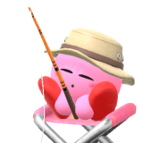
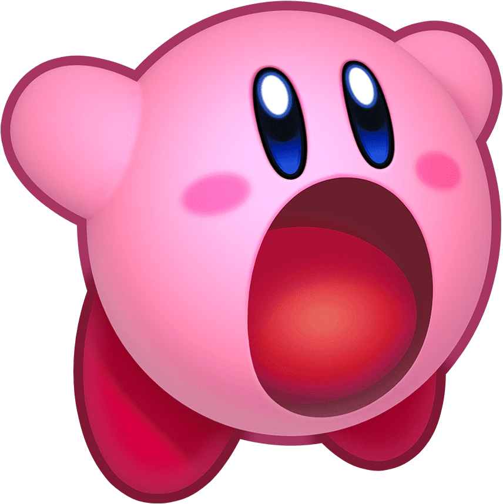
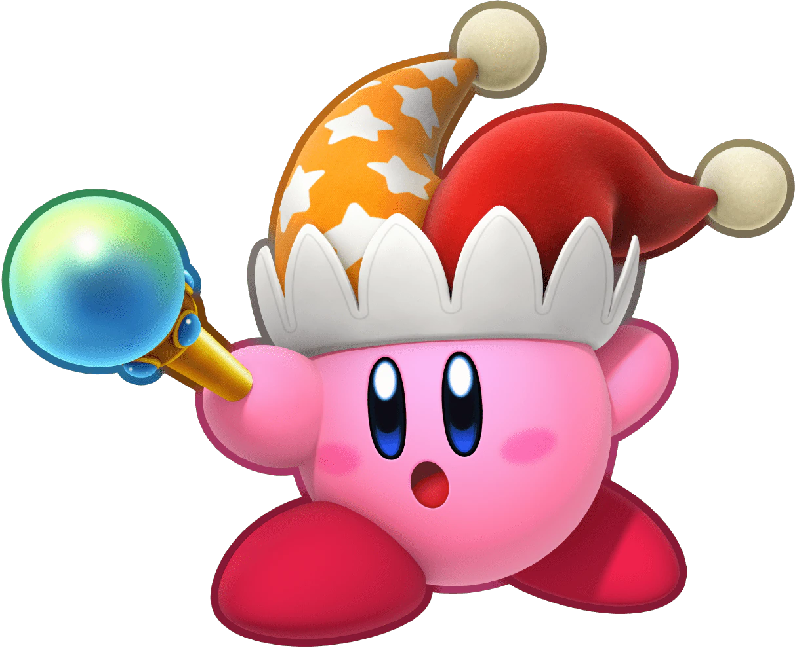
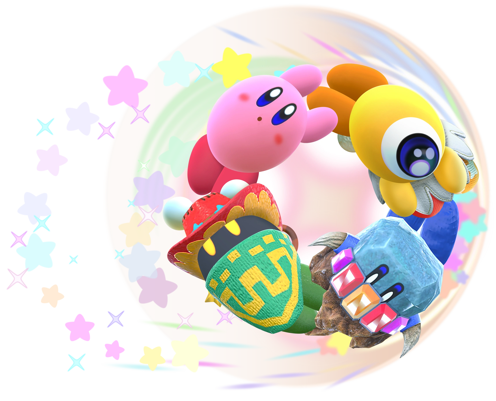
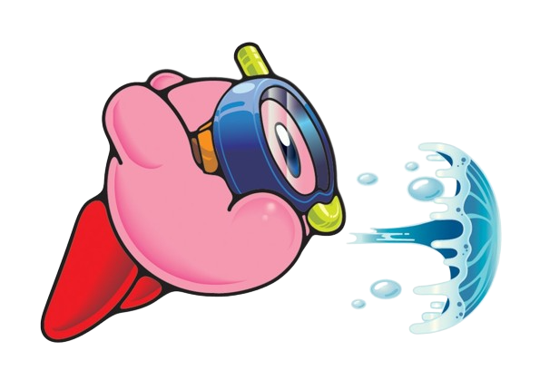
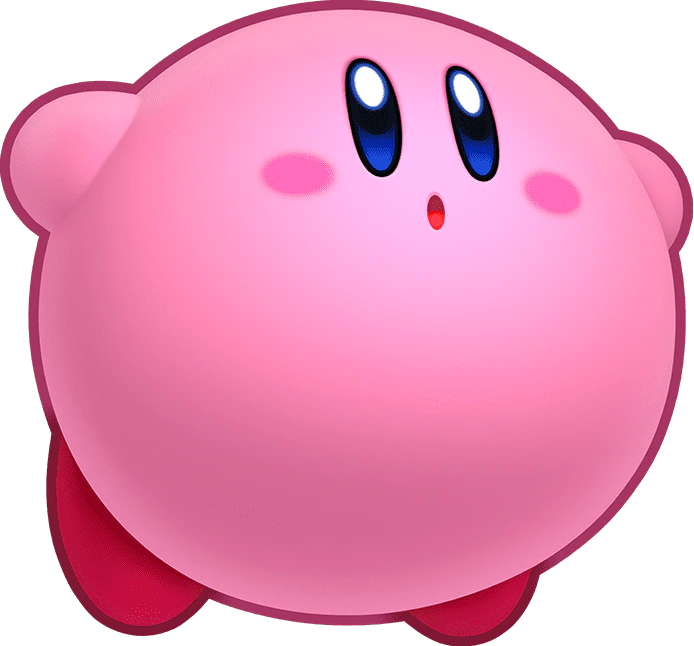

Kirby's inhale, introduced in Kirby's Dream Land, is one of his most well-known abilities. As the name implies, Kirby can inhale enemies and objects. He can either swallow what he inhaled or spit it out, which is known as a star spit. In later games, swallowing certain enemies gives Kirby a Copy Ability.
Kirby
It's the Super Tuff Pink Puff!
He's pink. He's round. And he's puffy. He's been on countless adventures, and he's saved his planet, Pop Star, tons of times, too. He can inhale enemies and gain their powers. He's been around for over thirty years and is loved by all. His games are so sweet that he'll give you a sugar rush. And he's so cute that you can't help but smile. Do you know his name? It's Kirby!

Background
Kirby has been in over 30 games, starting with Kirby's Dream Land in 1992. Since then, he has starred in Kirby's Adventure (1993), Kirby Super Star (1996), Kirby Air Ride (2003), Kirby: Planet Robobot (2016), Kirby: Star Allies (2018), Kirby and the Forgotten Land (2022), and many other titles.

Kirby is a cheerful and positive being who cares about those close to him. He is always willing to help those around him, even going out of his way to do so. He's also very brave, not being afraid to fight eldritch abominations when necessary. That doesn't mean Kirby isn't forgiving, as he can become friends with those he's fought in the past. Examples of enemies to friends include King Dedede, Magolor, Susie, and Meta Knight.
Kirby's favorite things to do are eat and sleep. When he's not busy saving the world from active threats, he's sleeping. And when he's not sleeping, he's eating.

Skills and Abilities
As the Super Tuff Pink Puff, Kirby has many skills! Learn about some of them below!
Inhale

Copy Abilities
Copy Abilities were first introduced in Kirby's Adventure. After inhaling and swallowing certain enemies with special powers, Kirby can also gain those powers. There are over 40 Copy Abilities in the series, and each Copy Ability has a unique moveset! Starting in Kirby Super Star, Kirby also gets a unique hat for each Copy Ability.

Helpers
In Kirby Super Star (+ Super Star Ultra) and Kirby Star Allies, Kirby can create a Helper by giving up a Copy Ability! Helpers are allied versions of the previously swallowed enemy.

Water Gun
Kirby can't use most of his Copy Abilities underwater, but he can use a water gun attack. Kirby shoots a bubble of water in the direction of the player's choice.

Hover
Kirby can inflate himself and flap his arms to hover. Exhaling will cause Kirby to deflate, and the exhaled air can deal damage!

Fun Facts!
Click the button for a Kirby fact!
Kirby is popular in his own universe, but he doesn't let his fame get to his head.
Kirby is boneless. He also has no teeth.
Kirby is officially 20 centimeters, or 8 inches, tall.
Kirby's stomach is believed to be a black hole. After all, where does he put everything he eats?
Kirby has a special title in the Japanese versions of his games, which is Hoshi no Kābī, or "Kirby of the Stars." This is also the name of his theme song.
Tomatoes are Kirby's favorite food.
Kirby cant read.
Kirby even got his own anime! It ran in the early 2000s for a total of 100 episodes.
Quotes
"Hiii!" - Kirby's catchphrase
"Lightning Buster!" - Kirby, Super Smash Bros. Ultimate
"PK Fire!" - Kirby, Super Smash Bros.